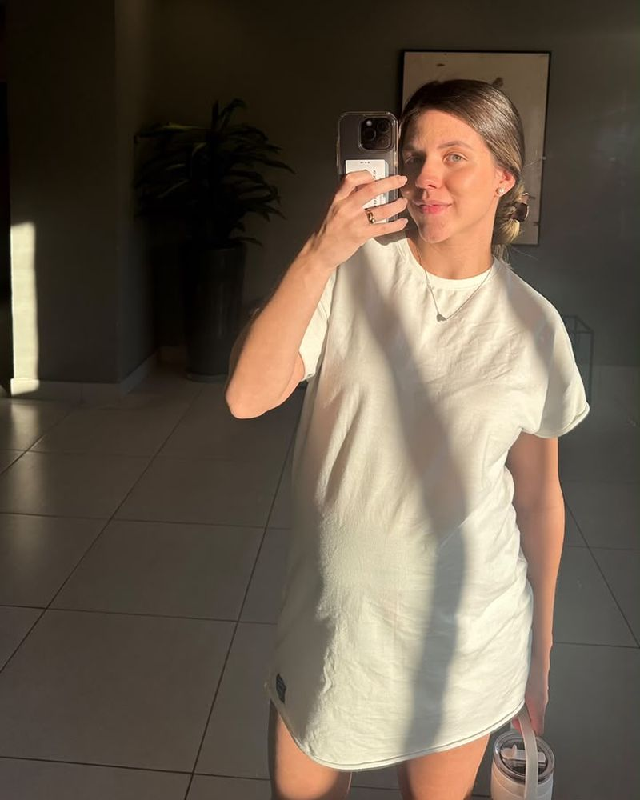
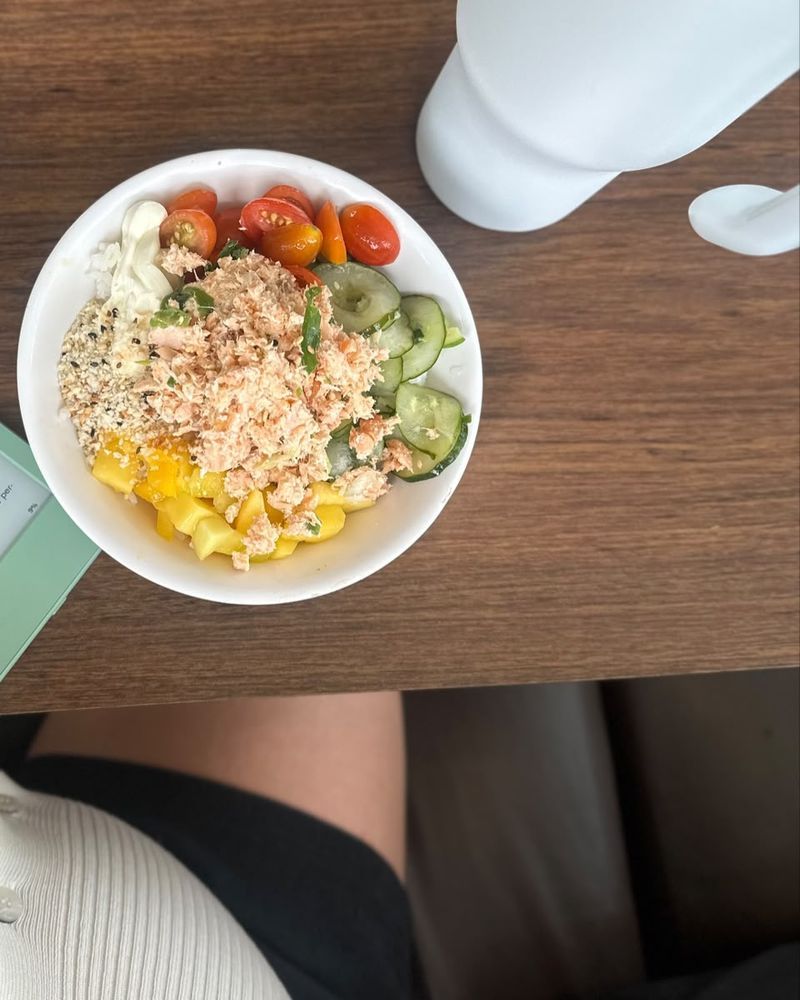
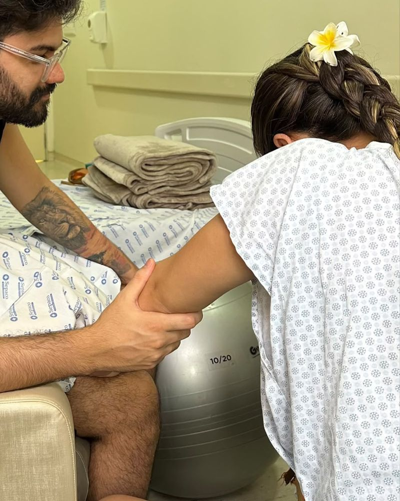
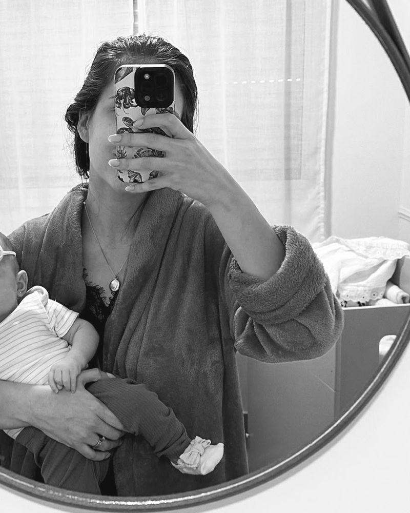
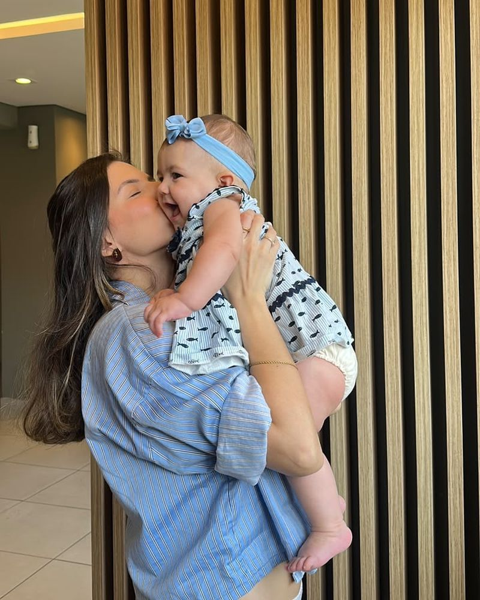

Beatriz Paes, nutricionista
Bem nutrida na gestação. Inteira no pós-parto.
Acompanhamento nutricional individualizado para gestantes e mulheres no pós-parto, alinhado com o seu obstetra. Do primeiro contato à nova rotina com o bebê.
- Nutricionista com foco em gestação e pós-parto
- Plano alinhado com o seu obstetra
- Mãe, viveu cada fase do acompanhamento
Para viver a gestação bem nutrida, sem medo e sem dieta restritiva
Três preocupações comuns na gestação, e como o acompanhamento ajuda com cada uma.
-
“Tenho medo de ganhar peso demais.”
Ganhar peso na gestação é esperado. O que importa é o ritmo. O seu ganho é acompanhado pela curva da Caderneta da Gestante, e o plano é ajustado a cada fase.
Calcular a faixa recomendada -
“Será que estou comendo o que o bebê precisa?”
O plano parte da sua rotina, da sua alimentação e dos seus exames. Sem dieta restritiva e sem “comer por dois”.
Ler o guia de alimentação -
“Vou demorar para recuperar o meu corpo.”
O pós-parto começa a ser preparado ainda na gestação. Depois do parto, a alimentação acompanha a nova rotina e a amamentação, no seu tempo.
Ler o guia do pós-parto
Como funciona o acompanhamento
Seis etapas, do primeiro contato à nova rotina com o bebê.
-
Primeiro contato
Entendimento das suas necessidades e da fase da gestação.
-
Avaliação individual
Análise da rotina, da alimentação, dos exames e das necessidades nutricionais.
-
Planejamento alimentar
Estratégias personalizadas e adaptadas à sua realidade.
-
Acompanhamento gestacional
Orientações e ajustes conforme a evolução da gestação.
-
Preparação para o pós-parto
Orientação nutricional para a nova rotina e a amamentação.
-
Continuidade do acompanhamento
Suporte durante a transição para a maternidade.
O que muda na alimentação em cada fase
Arraste o marcador, ou toque no disco, para ver o que o acompanhamento prioriza na sua fase.
Semana 20 2º trimestre
A fome aumenta e o bebê cresce rápido. O seu ganho de peso é acompanhado mês a mês na curva da Caderneta da Gestante, com ferro, cálcio e proteína no prato.
O que está incluso
Tudo o que faz parte do acompanhamento, da gestação ao pós-parto.
Acompanhamento nutricional individualizado
Construído a partir da sua fase, da sua rotina e dos seus exames.
Planejamento alimentar
Estratégias personalizadas e adaptadas à sua realidade.
Ajustes conforme cada fase
Orientações que acompanham a evolução da gestação.
Alimentação na amamentação
Orientação nutricional para a nova rotina com o bebê.
Contato com a Bea
Contato direto com a nutricionista durante o acompanhamento.
Alinhamento com o obstetra
O plano conversa com quem acompanha o seu pré-natal.
A Bea já esteve do seu lado da história
Antes de acompanhar outras mães, ela viveu cada fase deste acompanhamento: a descoberta, a gestação, o parto e os primeiros meses com a filha.
-
Descoberta da gravidez
A nutricionista virou paciente do próprio método
Com a alegria do positivo vieram as perguntas que ela responde todos os dias: o que comer, quanto ganhar de peso e como cuidar do bebê desde o começo.

-
Gestação
Comida de verdade, movimento e fé
Prato colorido, água sempre por perto, treino com orientação e amigas orando pela chegada da filha. Sem dieta radical e sem neura: alimentação prática, fé e simplicidade, do jeito que ela ensina.

-
Preparação para o parto
A reta final também prepara o pós-parto
Na reta final, a alimentação prepara o que vem depois: refeições simples e práticas para os primeiros dias com o bebê.

-
Nascimento da filha
O dia em que a filha chegou
Trabalho de parto com apoio ao lado, bola, respiração e muita entrega. E, no fim, a filha no colo.
-
Primeiros meses
Pouco sono, muito colo
Amamentação, noites curtas e quase nenhum tempo para cozinhar. É aqui que a alimentação prática faz diferença: refeições simples, energia para o dia e nada de dieta restritiva.

-
Hoje
Nutricionista e mãe
Hoje ela concilia a maternidade, os atendimentos e a própria alimentação, e acompanha outras mulheres na fase que acabou de viver.

Quem é a Bea
Beatriz Paes é nutricionista e trabalha com alimentação prática, fé e simplicidade. Ela ajuda você a construir e desconstruir hábitos para ter resultados, com atendimento humanizado e personalizado.
A Bea sabe o que é estar do seu lado da história. Por isso criou um acompanhamento que vai da gestação ao pós-parto, alinhado com o seu obstetra.
Com base nas recomendações oficiais
O acompanhamento segue as recomendações do Ministério da Saúde e as evidências mais recentes. Três números que guiam o trabalho:
-
8 a 12 kg
de ganho total recomendado para quem começa a gestação com peso adequado. Para quem começa acima do peso, a faixa é menor.
Caderneta da Gestante, Ministério da Saúde, 2022
-
1.000 mg
de cálcio por dia, da 12ª semana até o parto, é a recomendação para todas as gestantes, para prevenir a pré-eclâmpsia.
Nota Técnica 251/2024, Ministério da Saúde
-
40 mg
de ferro por dia, junto com 400 µg de ácido fólico, até o fim da gestação: a suplementação recomendada para as gestantes no pré-natal.
Programa Nacional de Suplementação de Ferro, Ministério da Saúde
Quem já foi acompanhada pela Bea
Gestação e pós-parto em um só acompanhamento
Um acompanhamento completo, que começa na gestação e segue pela nova rotina com o bebê.
Para quem é indicado
- Gestantes que querem ganhar o peso adequado para a sua fase
- Quem quer comer bem, sem dietas restritivas
- Mulheres no pós-parto que querem cuidar da alimentação e da amamentação
- Quem quer orientação para viver o pós-parto no seu tempo
A jornada
- Primeiro contato
- Avaliação individual
- Planejamento alimentar
- Acompanhamento gestacional
- Preparação para o pós-parto
- Continuidade do acompanhamento
Investimento
R$ 3.700
acompanhamento completo, da gestação ao pós-parto
- Acompanhamento nutricional individualizado
- Planejamento alimentar
- Ajustes conforme cada fase
- Orientação para a amamentação
- Contato com a Bea
- Alinhamento com o obstetra
Perguntas frequentes
Quando devo começar o acompanhamento?
Você pode entrar em contato em qualquer fase da gestação ou do pós-parto. O primeiro passo é entender a sua fase e as suas necessidades.
O programa atende mulheres que já estão no pós-parto?
Sim. O acompanhamento cobre a gestação e o pós-parto, incluindo a orientação nutricional para a nova rotina e para a amamentação.
Como funciona o planejamento alimentar?
Ele é individual. Parte da avaliação da sua rotina, da sua alimentação, dos seus exames e das suas necessidades nutricionais, e é ajustado conforme a evolução da gestação.
O acompanhamento considera a amamentação?
Sim. A preparação para o pós-parto inclui orientação nutricional para a amamentação.
Como funciona o contato com a Bea?
PREENCHER: canal de contato, horários e prazo de resposta.
Qual é a duração do acompanhamento?
PREENCHER: até quantos meses depois do parto o acompanhamento segue.
O atendimento é online ou presencial?
PREENCHER: formato do atendimento e cidade.
Como funciona o pagamento?
O investimento é de R$ 3.700 pelo acompanhamento completo. As formas de pagamento são combinadas com a Bea na primeira conversa.
PREENCHER: formas de pagamento aceitas e parcelamento.
Como faço para começar?
Preencha o formulário curto: no fim, a conversa com a Bea abre no WhatsApp com a mensagem pronta. Se preferir, fale direto pelo botão de WhatsApp.
Comece por uma conversa
Responda cinco perguntas rápidas. No fim, a conversa com a Bea abre no WhatsApp com a mensagem pronta.
Prefere escrever direto? WhatsApp (11) 94536-4807 ou Instagram @beapaes_
Sua mensagem está pronta.
Se o WhatsApp não abriu sozinho, toque aqui para abrir a conversa.